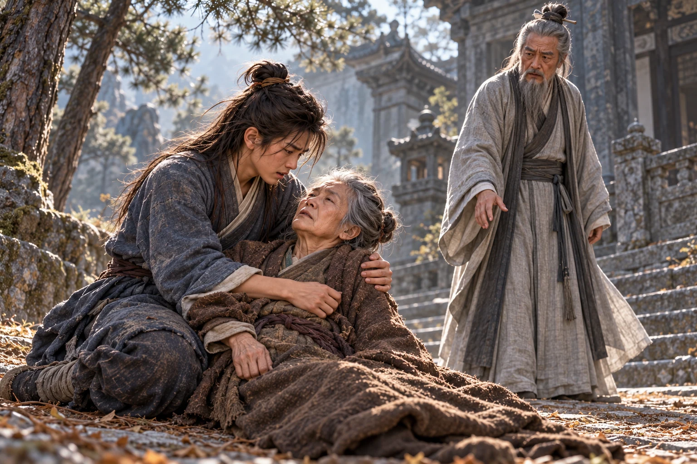
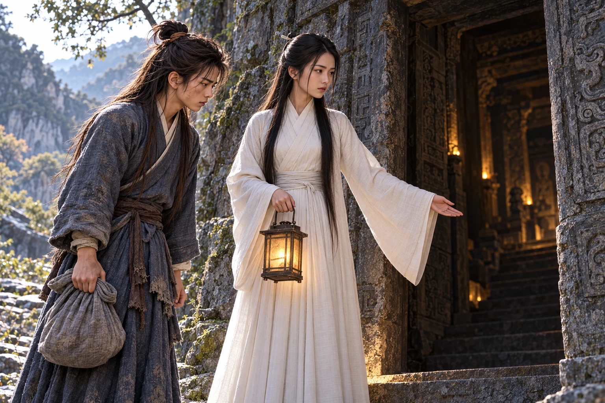

Kabut terbelah oleh suara benturan di lereng Zhongnan. berlindung di belakang batang pinus, sementara berdiri menghadapi murid-murid yang baru saja mengepung jalan.
“Aku Guo Jing. Aku mengantar putra saudara angkatku untuk menemui Tetua Qiu,” katanya, menurunkan kedua tangan. “Kalian salah mengenali orang. Simpan pedang sebelum seseorang terluka.”
Pendeta di depan mereka belum bersedia menyingkir. Namanya ; Dani mendengar para murid memanggilnya guru. Semula ia menuduh mereka bagian dari rombongan yang datang mengacaukan gunung. Kini, setelah beberapa pedang terpental tanpa Guo Jing menarik senjata, mukanya justru semakin gelap.
Seorang pendeta lain bergegas menuruni tangga. “Saudara Zhao, berhentilah! Tetua Qiu telah mendengar kedatangan Pendekar Guo.”
Zhao menarik napas melalui hidung. “Saudara Zhen, aku sedang menjalankan penjagaan. Mereka menerobos sebelum diperiksa.”
“Aku sudah menyebutkan maksud kedatanganku tiga kali,” ujar Guo Jing. Suaranya tetap tenang. “Tetapi perselisihan kita dapat menunggu. Dari atas ada orang meminta pertolongan.”
Pendeta yang baru datang memberi hormat. “, murid Tetua Qiu. Mohon Pendekar Guo mengikuti saya.” Matanya singgah pada Dani. “Anak muda, tetaplah di dekat pamanmu. Gunung ini sedang tidak aman.”
Di halaman atas, seorang pemuda berbusana mewah menekan pertahanan para pendeta dengan kipas besi. Seorang lelaki besar bersenjata gada mengawalnya. Dari teriakan mereka Dani menangkap nama dan . Rombongan itu menuntut jalan menuju Makam Kuno; nama seorang pewaris perempuan disebut seakan ia barang yang dapat diperebutkan.
Guo Jing melangkah masuk ketika gada menyambar pendeta yang jatuh. Ia mengalihkan senjata itu dengan telapak, memutar pinggang, lalu mendorong penyerangnya mundur. Kipas Huodu datang dari samping. Guo Jing menangkap pergelangan pemuda tersebut dan memaksanya berlutut tanpa mematahkan tangan.
“Di hadapan perguruan orang lain, beginikah caramu bertamu?”
Huodu mencoba menarik diri; urat di lehernya menegang. Guo Jing melepaskannya sesudah para pengikutnya mundur. Pemuda itu bangkit dengan mata menyala, tetapi memilih membawa rombongannya pergi. Dani baru keluar dari sisi tangga ketika Zhen memberi isyarat bahwa jalan sudah aman.
Tetua menyambut Guo Jing di serambi. Pertemuan mereka memperlihatkan keakraban yang tidak dapat dibuat-buat. Ketika mendengar nama , wajah pendeta tua itu berubah; ia memanggil Dani mendekat dan menanyakan .
“Ibu sudah meninggal, Tetua,” jawab Dani. “Saya belum mempunyai tempat belajar yang tetap.”
Qiu terdiam sebentar. “Ayahmu pernah menjadi muridku. Kini engkau datang meminta bimbingan; sudah sepatutnya perguruan ini menerimamu.”
membicarakan dasar yang belum utuh dan ilmu keras yang pernah digunakannya. Qiu mendengarkan sampai selesai, lalu menyerahkan pengajaran sehari-hari kepada Zhao Zhijing. Dani melirik pendeta yang tadi menghadang jalan. Zhao sudah kembali tersenyum.
“Aku menitipkannya untuk dibimbing,” kata Guo Jing. “Bila ia bersalah, tunjukkan kesalahannya. Bila belum mampu, ajarilah. Anak ini cepat belajar, tetapi hatinya mudah terluka oleh perlakuan yang tidak adil.”
“Murid memahami pesan Pendekar Guo,” jawab Zhao di hadapan tetuanya.
Dani berlutut dan memberi hormat. Batu dingin menekan lututnya ketika ia menyebut Zhao sebagai Guru. Zhen berdiri di sisi Qiu; kedua pendeta itu menyaksikan penerimaannya. Dani mengingat wajah mereka, terutama karena kini merekalah orang-orang yang akan ditemuinya setelah pamannya pergi.
Guo Jing memeriksa tempat tinggal Dani sebelum berangkat. Di tangga ia membetulkan letak buntalan yang melorot.
“Paman akan mencari kabarmu. Belajarlah dengan tekun, tetapi jangan menganggap setiap kesulitan harus kautanggung sendirian.”
“Kalau aku sudah bisa memakai pedang, maukah Paman datang melihatnya?”
“Tentu. Paman ingin melihat apa yang kaupelajari, bukan hanya mendengar siapa yang berhasil kaukalahkan.”
Dani mengangguk dan menunggu sampai jubah pamannya hilang di balik gerbang. Zhao memanggilnya tanpa senyum.
Pekan-pekan berlalu dalam hafalan; gerakannya tidak pernah diajarkan. Zhao sengaja menahan pelajaran itu. Ia menyimpan malu karena dipatahkan Guo Jing di gerbang dan kini menuntut kepatuhan mutlak dari anak yang dititipkan kepadanya. Dani belum memahami dendam gurunya. Ia terus mengulang bait, berharap hafalan yang sempurna akhirnya membuka pintu latihan.
Pada suatu pagi Dani menyelesaikan hafalan tanpa satu kesalahan dan meminta diajari gerakannya. Zhao hanya membalik halaman.
“Murid sudah hafal, Guru. Tetapi kalau orang memukul, bagian mana dari kitab ini yang harus murid pakai untuk menangkis?”
“Itu berarti belajarmu belum cukup. Duduk dan lanjutkan.”
Di ambang pintu, mendengar percakapan itu. Murid bertubuh lebih besar tersebut menunggu Zhao keluar sebelum mendekat. Jarinya menekan kitab hingga tertutup.
“Guru sudah memberimu jawaban. Apakah kau masih hendak membantah beliau?” kata Lu Qingdu.
“Kakak Lu, tanganmu menutupi pelajaranku. Apakah Guru menyuruhku menghafal garis telapakmu juga?”
Lu tidak mengangkatnya. Ia membungkuk sampai bayangannya menutupi halaman. “Saat bicara kepadaku, panggil Kakak Lu. Kau mengerti kedudukanmu di sini?”
memandang tangan yang menekan kitab, kemudian wajah pemiliknya. “Tentu aku tahu Kakak lebih dahulu masuk perguruan. Itulah sebabnya aku heran: mengapa orang yang sudah pandai masih berebut kitab dengan orang bodoh sepertiku?”
Suara itu patuh, tetapi pandangannya tidak. Lu menampar belakang kepalanya. Dani menahan sisi bangku agar tidak tersungkur; ketika ia berdiri, Zhao sudah kembali ke pintu.
“Apa yang terjadi?” tanya gurunya.
Lu lebih dahulu menjawab. “Murid sedang mengingatkannya tentang tata krama, Guru. Tetapi ia justru hendak melawan.”
“Guru, dia memukul kepalaku ketika kuminta melepaskan kitab itu,” kata Dani.
Zhao melihat kitab yang tertutup dan bangku yang bergeser. “Duduk kembali, Dani. Seorang murid yang menghormati saudara seperguruannya tidak akan membuat perkara sekecil ini menjadi pertengkaran.”
Kulit kepala Dani berdenyut. Zhao pergi tanpa menanyai Lu mengapa ia memukul. Kalau Guru tidak mau mendengar, kepada siapa aku harus mengadu? Dani duduk kembali; kitab terbuka pada halaman yang salah, dan ia lama tidak menyadarinya.
Sejak itu Lu tidak perlu menunggu Dani membantah untuk mencari persoalan. Ia memotong giliran Dani mengambil air, menyenggol bahunya ketika berpapasan, atau memaksanya memberi hormat berulang-ulang. Dani mula-mula mengadu, lalu berhenti setelah setiap pengaduan berakhir dengan teguran kepada dirinya sendiri.
Dani mulai menghindari jam latihan Lu dan menyimpan buntalan dekat pintu, siap diambil ketika tak tahan lagi. Ia belajar mengelak dari perundungan, tetapi belum diajari menangkis pukulan.
Hari itu Zhao memanggilnya ke tempat latihan. Dani mendekat dengan harapan yang hampir membuatnya lupa pada perlakuan sebelumnya. Gurunya berdiri di tepi halaman bersama Lu Qingdu.
“Engkau terus meminta mempelajari gerakan,” kata Zhao. “Perlihatkan hasil belajarmu.”
Dani menatap Lu yang sudah mengambil posisi. “Guru belum pernah menunjukkan caranya.”
“Bukankah kau sendiri mengatakan semua baitnya sudah kauhafal?” tanya .
“Bunyinya murid tahu. Kalau hafalan dapat memukul orang, sejak tadi Kakak Lu tentu sudah tergeletak.” Dani masih mencoba tersenyum, meski telapak tangannya mulai dingin.
“Kalau begitu, gunakan pikiranmu.” Zhao memberi isyarat kepada Lu. “Jangan sampai ia mengatakan tidak diberi kesempatan.”
Lu maju sebelum selesai bersiap. Pukulan pertamanya ditepis asal-asalan; yang kedua mengenai lengan dan membuat telapak Dani kesemutan. Dani mundur, mencoba meniru posisi kaki yang pernah dilihatnya, tetapi Lu menyapu pijakannya. Punggungnya membentur batu.
“Bangun,” perintah Zhao.
Dani bangkit dengan napas tertahan. “Mohon Guru menunjukkan cara menahan pukulannya.”
“Jangan jadikan ketidaktahuanmu alasan untuk menghindari latihan,” kata Zhao Zhijing.
Lu kembali mendekat. Kali ini Dani melihat pundak lawannya bergerak sebelum pukulan datang, tetapi tubuhnya terlambat mengikuti. Sisi mulutnya pecah terkena buku jari. Rasa asin memenuhi lidahnya. Ia mundur sampai tumitnya menyentuh undakan.
Zhao tetap berdiri di tempatnya.
Dani menyeka bibir. Ia mengenali ketakutan yang mendorong tubuhnya merendah, dan sejenak wajah muncul di benaknya. Jangan memukul tanpa tahu akibatnya, begitu pesan . Namun orang yang seharusnya mengajarinya mengendalikan tangan justru membiarkannya dipukul.
“Cukup,” kata Dani.
Lu meraih kerahnya. “Siapa yang menyuruhmu berhenti?”
Dani menepis tangan itu, menjejakkan kaki, lalu mendorongkan telapak dari posisi rendah. Gerak itu masih kasar. Tenaganya terlepas sekaligus dan membuat bahunya nyeri, tetapi cukup untuk memutus sergapan Lu. Murid itu terhuyung, jatuh menyamping, dan mengerang sambil memegang rusuknya.
Dani tidak mengejar. Ia membuka kedua tangannya dan mundur dari tubuh yang jatuh itu. Untuk sesaat ia berharap Zhao akan melihat bahwa ia sudah berhenti.
“Dari mana engkau memperoleh ilmu sesat itu?” bentak gurunya.
Harapan itu habis. Dani menatap wajah Zhao, lalu kitab yang terletak di bangku serambi. Semua kalimat yang dihafalnya tidak akan menjawab pertanyaan tersebut.
“Yang jelas, bukan Guru yang mengajarkan cara menyelamatkan diri ini,” jawab Dani.
Zhao melangkah turun. Lu menunjuk dengan tangan gemetar, mendesak agar ia dihukum. Dani tidak menunggu mereka mencapai dirinya. Ia berlari melewati serambi, menyambar buntalan dari kamarnya, dan keluar melalui jalan belakang sebelum Zhao selesai meneriakkan perintah untuk menghentikannya.
Ia memilih jalan belakang yang biasa dilalui saat mengambil air, menyelinap di antara bangunan, lalu mencapai hutan sebelum para pengejar menutup jalan.
Akar-akar pinus memaksanya memperlambat langkah. Sesudah suara pengejar menjauh, Dani baru menyadari bahwa ia tidak tahu jalan menuruni gunung. Ia mengikuti celah di antara pepohonan sampai menemukan batu-batu tua yang hampir tertutup lumut, lalu terhenti dengan napas patah-patah.
“Jangan bergerak dahulu, Nak. Kakimu hampir kehilangan pijakan,” seru perempuan tua itu.
Suara perempuan tua datang dari samping. Dani berbalik terlalu cepat dan hampir kehilangan keseimbangan. Seorang nenek berambut kelabu muncul dari balik batang pohon, mengenakan jubah cokelat tua yang sederhana. Matanya lebih dahulu tertuju pada bibir Dani, kemudian tangan yang menekan bahunya.
“Siapa yang memukulmu sampai bibirmu pecah begitu?” tanya perempuan tua itu.
“Nenek, aku bisa berjalan sendiri.” Dani mencoba meluruskan badan dan gagal. “Hanya tanahnya yang kurang bersahabat hari ini.”
Perempuan itu tidak tersinggung. Ia mengamati jalan di belakang Dani, lalu menyuruhnya duduk di batu rendah. Dani tidak menurut sampai kedua kakinya mulai gemetar.
“Namaku Sun,” kata Nenek Sun sambil membasahi kain untuk membersihkan luka di bibirnya. “Sekarang katakan namamu.”
“Namaku Dani Moan, Nek,” jawab Dani.
“Apakah engkau murid perguruan ?” tanya Nenek Sun.
Ia mengangguk sekali, kemudian menggeleng. menghentikan tangannya dan menunggu. Sikap itu membuat Dani semakin kesulitan menahan kata-kata yang sejak tadi menumpuk di dadanya.
Ia menceritakan hafalan, pukulan, dan pelajaran yang selalu ditunda. Ketika sampai pada Lu yang jatuh, Dani menatap ujung sepatunya. “Aku memang memukulnya kembali, Nek. Sekarang mereka hanya akan mengatakan bahwa akulah yang bersalah.”
“Nenek hendak mendengar seluruh kejadiannya. Tidak perlu kausisakan hanya bagian yang membuatmu tampak benar,” kata Nenek Sun.
terdiam sebentar, lalu mengaku bahwa ia menggunakan ilmu yang belum dapat dikendalikannya. Ia sudah pernah melukai seseorang dengan gerakan itu. Nenek Sun mendengarkan sampai selesai tanpa melepaskan kain dari tangannya.
“Kau perlu diajar,” kata Nenek Sun akhirnya. “Itu tidak memberi mereka hak untuk menyiksamu.”
Dani mengangkat muka. Perempuan tua itu sudah berdiri, memeriksa kembali jalan yang tadi dilewatinya. Ia lalu mengulurkan tangan. Kali ini Dani menerimanya.
Nenek Sun membawanya ke pintu batu di lereng yang dinaungi pepohonan. Di ambangnya berdiri seorang gadis berbaju putih, rambut hitamnya jatuh lurus di belakang bahu. Wajahnya muda, hanya terpaut dua tahun dari Dani, tetapi ia berdiri tanpa gerak seolah sudah lama menunggu di tempat yang sama.
“Nona, anak ini terluka,” kata Nenek Sun. “Biarkan ia beristirahat di dalam.”
Tatapan gadis itu singgah pada luka Dani. “Nenek Sun, anak ini bukan anggota perguruan kita. Orang luar tidak diperkenankan tinggal di makam.”
“Ia terluka dan tidak mempunyai tempat berlindung, Nona. Biarkan ia memulihkan diri dahulu,” jawab Nenek Sun.
“Kita juga tidak biasa menerima murid dari luar. Apa yang akan kaulakukan sesudah lukanya pulih?” kata gadis berbaju putih itu.
Dani melepaskan tangan Nenek Sun. Ia belum meminta menjadi murid, tetapi penolakan itu sudah diucapkan sebelum ia sempat menyebut namanya. Ia memungut buntalan yang diletakkan di kaki batu.
“Kalau Nona keberatan, aku pergi saja.” Ia mengangkat buntalan terlalu cepat hingga bahunya berdenyut. “Aku sudah biasa mencari atap. Tidak semua atap mempunyai pemilik segalak pendeta tadi.”
Nenek Sun menahan lengannya. “Tunggulah sebentar, Dani.” Kepada gadis itu ia berkata lebih pelan, “Ia masih anak-anak, Nona. Setidaknya dengarkan dahulu bagaimana wajahnya sampai terluka.”
Gadis berbaju putih itu memandang Dani lagi, sungguh-sungguh kali ini. Tidak ada ejekan dalam matanya, juga tidak ada sambutan. “Siapa yang melukainya?”
“Orang yang seharusnya membimbingnya justru membiarkan ia dipukuli.” mengatupkan rahang. “Aku akan meminta penjelasan kepada mereka. Anak ini tidak akan kukembalikan untuk mengalami hal yang sama.”
Gadis itu tidak melarang ketika Nenek Sun mengajak Dani menjauh dari ambang. Dani menoleh sekali. Pintu batu itu tetap terbuka, tetapi tidak ada suara yang menyuruhnya tinggal.
Di batas hutan, menunggu bersama beberapa murid. berhenti ketika mengenalinya.
“Tetua Zhen, aku tidak akan kembali kepada Guru Zhao.”
“Dani, ada murid yang terluka. Engkau harus memberikan penjelasan,” jawab Zhen. Kepada Nenek Sun ia menangkupkan tangan. “Mohon jangan membawa murid perguruan kami pergi sebelum perkara ini diperiksa.”
“Aku justru datang meminta penjelasan,” balas Nenek Sun. “Kalau perguruanmu pandai mengajar, mengapa anak ini lebih mengenal pukulan daripada pelajaran?”
Zhen mengulurkan tangan hendak menahan mereka. Nenek Sun menepisnya; beberapa gerakan singkat membuat Dani terseret mundur. Zhen menahan serangan perempuan tua itu dengan langkah teratur, tetapi tidak berhasil memisahkannya dari Dani. Ia menyerukan agar murid lain memanggil tetua, lalu membawa pertentangan itu ke jalan yang lebih lebar.
Di sanalah mereka bertemu . Pendekar tua itu datang setelah mendengar keributan; berada tidak jauh di belakangnya. Melihat Dani, Zhao langsung menunjuk.
“Paman Guru, itulah anak yang melukai saudara seperguruannya dan kemudian melarikan diri,” kata Zhao Zhijing.
Nenek Sun menempatkan tubuhnya di depan Dani. “Sebelum menanyakan perbuatannya, tanyakan siapa yang membuat wajahnya begini.”
Hao Datong memandang Dani, kemudian Zhao. “Apa yang diajarkan kepadanya?”
“Murid mengajarkan dasar perguruan, Paman Guru,” jawab Zhao. “Namun anak ini tidak sabar mengikuti pelajaran. Ia membawa ilmu dari luar lalu memakainya untuk menyerang.”
“Tunjukkan dasar itu,” kata Nenek Sun. “Suruh ia memperagakan satu gerakan yang benar-benar pernah kauajarkan.”
Zhao mengeraskan wajah. “Urusan murid akan diselesaikan di Quanzhen.”
Dani merasakan tangan bergerak ke belakang, memastikan ia masih berada di sana. Ia menggenggam ujung jubah perempuan itu. Hao Datong melihat gerakan tersebut dan mengangkat tangan agar Zhao diam.
“Anak muda, masuklah bersama kami. Aku akan memeriksa perkara ini dan mendengarkan keteranganmu,” kata Hao Datong.
“Tetua, aku sudah mengadu kepada Guru,” jawab . “Berkali-kali aku meminta pertolongan, tetapi pukulan mereka tak juga berhenti.”
“Sekarang aku sendiri yang akan mendengarkan. Jangan mengira pengaduanmu tidak akan diperiksa,” jawab Hao Datong.
Dani menatap Zhao di belakang Hao. Pegangannya pada jubah Nenek Sun semakin erat.
“Maafkan aku, Tetua. Aku tidak mau masuk ke halaman itu lagi,” kata Dani.
Hao Datong menghela napas. Ia bermaksud menyelesaikan persoalan dengan tertib, tetapi di hadapannya penolakan seorang anak dan tuntutan seorang perempuan asing mulai terasa seperti tantangan terhadap perguruan. “Ia tidak dapat dibawa pergi sebelum kami mengetahui seluruh kejadiannya.”
Nenek Sun menoleh kepada Dani. “Berjalanlah di belakang Nenek.”
Ketika mereka berbalik, maju untuk menahan bahu Dani. Nenek Sun menyapu tangan itu dan mendorong anak tersebut ke belakangnya. Dua gerakan berikut berlangsung terlalu cepat untuk diikuti Dani: lengan jubah beradu, langkah Hao berputar, lalu telapaknya terlepas dalam tangkisan balasan.
Pukulan itu mengenai tubuh Nenek Sun.
Perempuan tua itu mundur satu langkah. Mulutnya terbuka, tetapi tidak ada suara. Dani baru sempat menangkapnya ketika kedua lututnya sudah kehilangan tenaga; berat tubuhnya menarik mereka jatuh bersama ke tepi jalan.
“Nenek Sun!” panggil Dani.
Hao Datong menurunkan tangan. Wajahnya berubah sebelum ia mendekat, dan perubahan itulah yang pertama kali membuat Dani takut. Bukan geram, bukan kemenangan. Tetua itu tampak seperti orang yang baru menyadari sesuatu telah melampaui kehendaknya.

“Baringkan tubuhnya perlahan, Nak. Izinkan aku memeriksa lukanya,” kata Hao Datong.
“Jangan sentuh!” Dani memeluk bahu . “Nenek, dengar aku?”
Jari-jari keriput bergerak di lengan bajunya. Dani menunduk begitu dekat hingga rambutnya menutupi wajah perempuan itu. Ia segera menyingkirkannya, seolah hal sekecil itu dapat mempermudah Nenek Sun bernapas.
Langkah ringan terdengar dari arah hutan. Gadis berbaju putih tadi telah menyusul mereka. Ia berlutut di sisi Nenek Sun, memegang pergelangan tangannya, lalu menatap Hao Datong.
Zhen kehilangan kata-kata ketika melihat pewaris Makam Kuno dari dekat. Nenek Sun sedang sekarat, tetapi perhatiannya tertawan wajah gadis berbaju putih itu. Ia menunduk saat Zhao menyentuh sikunya, malu karena lalai. Keterpukauan yang disembunyikannya di balik sikap tertib itulah awal obsesi yang kelak dipeliharanya sendiri.
“Apakah Tetua yang memukul Nenek Sun?” tanya gadis berbaju putih itu.
Hao Datong tidak menghindari pandangannya. “Tangkisanku terlalu keras. Aku tidak bermaksud—”
Gadis itu sudah kembali menghadap perempuan tua di pangkuan . Nenek Sun membuka mata. Ketegangan di sekitar mulutnya sedikit mengendur saat mengenali siapa yang datang.
“Nona, dengarkan aku…” bisik Nenek Sun.
“Aku sudah di sini, Nenek Sun. Jangan paksakan suaramu,” jawab gadis itu.
“Jangan tinggalkan anak ini seorang diri, Nona,” pinta Nenek Sun.
Gadis itu diam. Dani menatap dada Nenek Sun yang bergerak semakin dangkal. Aku akan menurut, asal Nenek jangan pergi, pintanya dalam hati. Seperti saat kehilangan ibunya, ia mencari kesalahan pada dirinya sendiri, berharap masih ada sesuatu yang dapat diperbaiki untuk menahan kematian.
“Aku akan menjaganya, Nenek Sun. Aku berjanji kepadamu,” kata gadis itu.
Nenek Sun menatap Dani. Ia mencoba mengangkat tangan ke wajah anak tersebut, tetapi hanya mampu menyentuh dagunya. Dani segera menahan tangan itu dengan kedua telapak.
“Aku akan menurut,” kata Dani tergesa. “Aku tidak akan memukul lagi. Nenek jangan bicara dulu.”
Perempuan tua itu seperti hendak menjawab. Bibirnya bergerak, kemudian berhenti. Dani masih menunggu sampai gadis berbaju putih meletakkan tangan di atas tangannya.
“Dani, jangan guncangkan tubuh lagi,” kata gadis berbaju putih itu.
“Tetapi Nenek belum menjawabku. Aku tadi sudah berjanji akan menurut,” bantah Dani.
Gadis itu tidak mengulang perintah. Ia menutup mata Nenek Sun dengan jemarinya, pelan dan cermat. Barulah Dani mengerti. Tangisnya pecah tanpa sempat disembunyikan; ia menunduk pada bahu orang yang belum lama dikenalnya dan tidak dapat melepaskan genggamannya.
berlutut beberapa langkah dari mereka. “Kesalahan ini menjadi tanggung jawabku.”
“Nyawanya tidak kembali karena Tetua bersedia mengaku,” kata gadis itu.
Ia menyerahkan tubuh Nenek Sun kepada dan berdiri menghadapi Hao. Kebutan putih dari lengan bajunya menyambar begitu cepat hingga pedang Hao terdesak ke sisi tubuh. Pendeta tua itu mencoba bertahan tanpa membalas sekeras tadi. Dalam beberapa pertukaran, ujung senjatanya tersisih dan telapak gadis itu berhenti di depan dadanya.
tiba sebelum serangan berikutnya dilepaskan. Ia masuk di antara mereka, mengalihkan lengan dengan tenaga yang membuat gadis itu mundur setapak.
“Nona, biarkan kami menanggung kesalahan ini dengan menyelidikinya. Menambah kematian tidak akan menghidupkan Nenek Sun.”
“Kalau sejak tadi kalian mendengarkan, beliau tidak perlu mati.” Gadis itu mengambil kembali tubuh Nenek Sun. “Anak ini kubawa. Siapa yang hendak merampasnya harus melewatiku dahulu.”
Qiu memandang Dani yang berdarah, lalu Zhao. Ia memberi jalan. Zhen juga mundur, tetapi matanya masih mengikuti Xiaolongnü ketika ia berbalik menuju hutan.
Dani menatap pendeta itu. “ sudah melihat semuanya. Jangan katakan kelak bahwa Nenek datang untuk membuat keributan.”
Zhen membuka mulut, lalu hanya berkata, “Aku melihatnya.”
Qiu memanggil Zhao untuk memberikan penjelasan. Dani mendengar suara itu dari jauh sambil mengikuti Xiaolongnü, membawa buntalan yang kembali kotor oleh tanah.
Sesudah Nenek Sun dibaringkan di dalam makam, Dani duduk dekat pintu. Gadis itu membereskan rambut kelabu yang terlepas dari ikatannya, lalu menutupi tubuh perempuan tua tersebut. Tangannya berhenti sebentar pada tepian kain sebelum ia menariknya sampai rapi.
Dani mengusap pipi yang sudah kering. Di dalam ruangan itu tidak terdengar murid berlatih, orang memanggil, atau langkah yang mengejarnya. Keheningan yang tadi dicari sekarang membuat setiap tarikan napasnya terdengar terlalu keras.
“Jadi engkaulah Dani,” kata gadis itu. Bukan pertanyaan. “ telah menyebutkan namamu kepadaku.”
Ia mengangguk.
“Namaku Xiaolongnü. Mulai sekarang engkau berada dalam tanggunganku,” kata gadis itu.
Nama itu tidak dikenalnya. Dani hanya tahu gadis tersebut memegang janji yang diucapkan kepada orang sekarat, dan janji semacam itu kadang lebih berat daripada keinginan orang yang mengucapkannya.
“Biar aku menunggu sampai Nenek Sun dimakamkan,” kata . “Sesudah itu aku akan pergi. Nona tak perlu memeliharaku hanya karena kasihan.”
menoleh. “Dani, aku tidak menyuruhmu pergi. Aku telah berjanji akan menjagamu.”
“Tetapi tadi Nona mengatakan bahwa orang luar tidak boleh tinggal di sini,” kata Dani.
“Tadi Nenek Sun masih dapat menjagamu. Sekarang beliau telah menyerahkan tanggung jawab itu kepadaku, dan aku tidak akan mengingkarinya,” jawab Xiaolongnü.
Dani tidak mempunyai jawaban. Xiaolongnü mengambil kain bersih dan meletakkannya di dekat tangannya, kemudian menunjuk bibirnya. Dani menyeka luka itu sendiri. Ketika ia menyentuh bagian yang pecah, napasnya tertahan, tetapi kali ini ia tidak mengeluh.
“Kalau engkau tinggal, aku akan mengajarimu ilmu perguruanku,” kata Xiaolongnü. “Engkau harus mendengarkan petunjukku dan menaati aturan di sini.”
Dani menatapnya. “Nona akan memperlihatkan gerakannya kepadaku? Bukan hanya menyuruhku menghafal?”
“Bagaimana engkau dapat belajar kalau aku tidak menunjukkan caranya?” Xiaolongnü meletakkan kain bersih di tangannya. “Bersihkan dahulu lukamu. Pelajaran tidak akan lari ke mana-mana.”
“Kepandaianku masih sedikit, Nona,” kata Dani akhirnya. “Kalau aku keliru, tunjukkan saja letak salahnya. Jangan suruh orang memukulku karena sesuatu yang belum pernah diajarkan.”
“Aku sendiri yang akan mengajarimu, Dani. Kalau engkau salah, aku pula yang membetulkannya; tidak perlu ada orang lain di antara kita,” jawab Xiaolongnü.
Xiaolongnü mengatakannya dengan tenang, seolah sedang menjelaskan sesuatu yang sudah pasti. Dani mengangkat wajah dan untuk pertama kalinya menatap Xiaolongnü tanpa bersiap mendengar penolakan. Gadis itu masih sangat muda; ketenangannya tidak menyerupai kewibawaan , melainkan seseorang yang belum terbiasa menjelaskan hal yang baginya sudah jelas.
Dani berlutut. Kali ini tidak ada tangan yang menekan kepalanya atau suara yang menyuruhnya mengulang penghormatan. Ia membungkuk karena ingin menerima apa yang ditawarkan.
“Murid bersedia belajar dan menaati petunjuk guru,” ucap Dani.
“Bangunlah, Dani. Panggil saja aku Bibi,” kata Xiaolongnü. Sebutan itu menjadi penghormatan kepada gurunya, bukan hubungan darah di antara mereka.
“Baik, Bibi. Tetapi kalau aku lambat mengerti, jangan langsung bosan kepadaku.”
mengangkat lampu dan berjalan menuju lorong. memungut buntalan, lalu berhenti untuk memandang tubuh sekali lagi. Ia memberi hormat dalam-dalam sebelum menyusul cahaya kecil itu.
Di ambang lorong, Xiaolongnü menunggu sampai ia berada di sisinya. Baru kemudian ia menunjukkan jalan masuk. Dari luar masih terdengar angin menyentuh dedaunan; Dani menoleh pada celah terang yang perlahan menyempit di belakang mereka.

Pintu itu menutup setelah Dani berada di dalam.